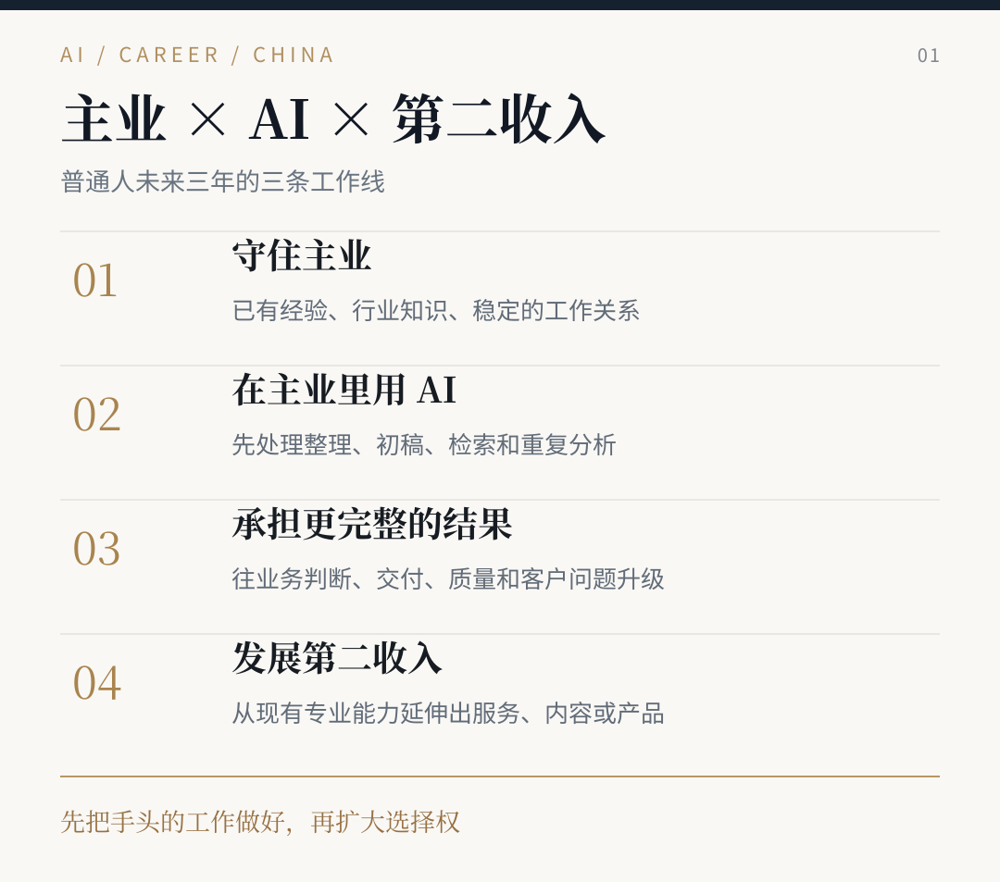
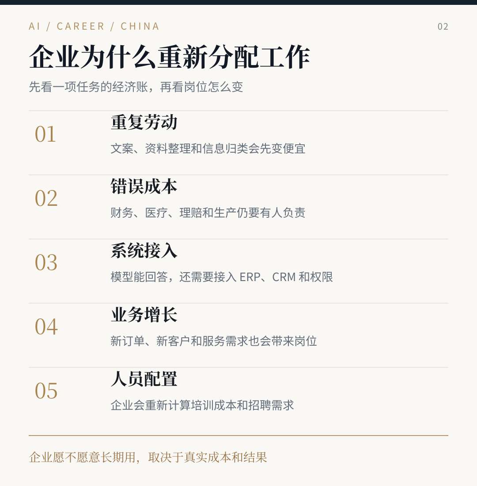
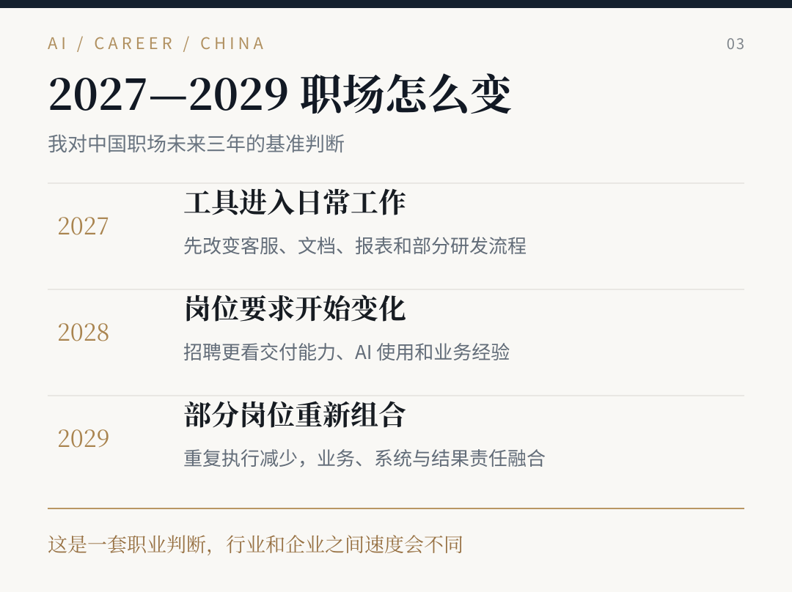
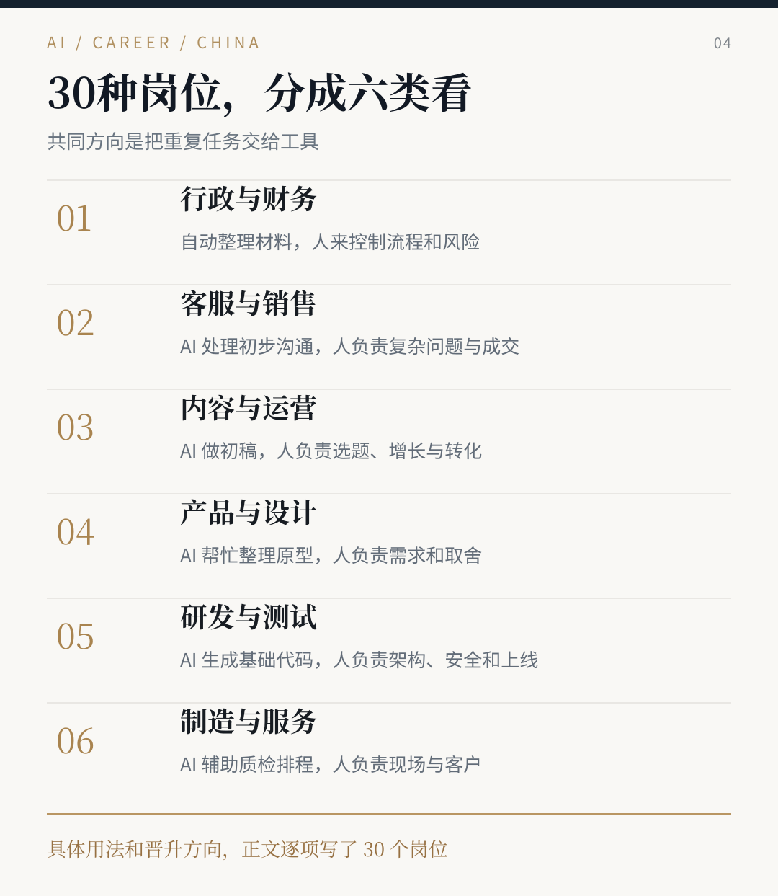
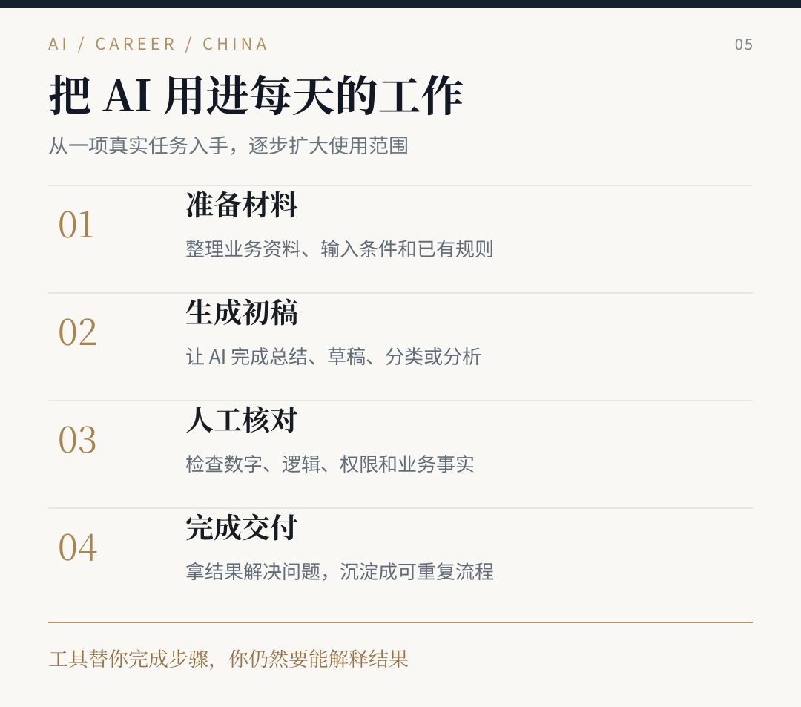
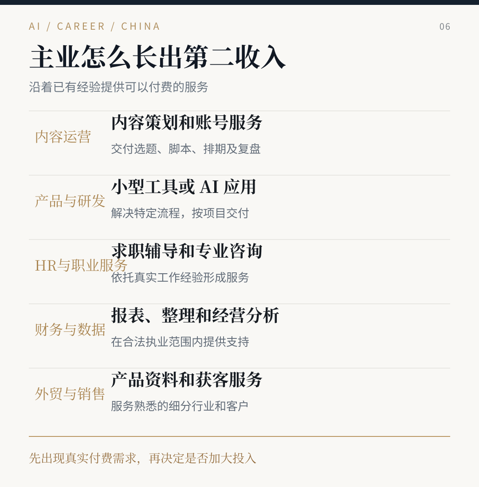
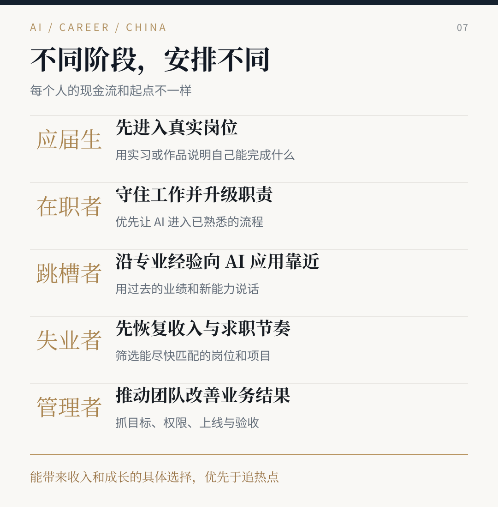
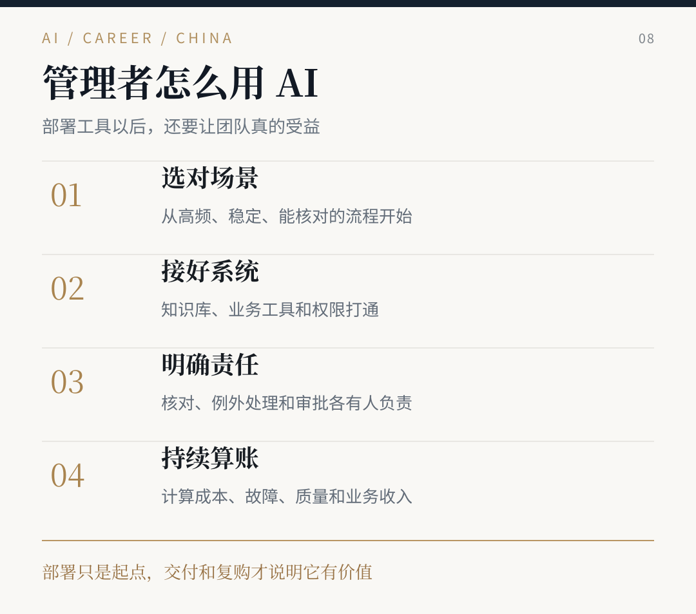
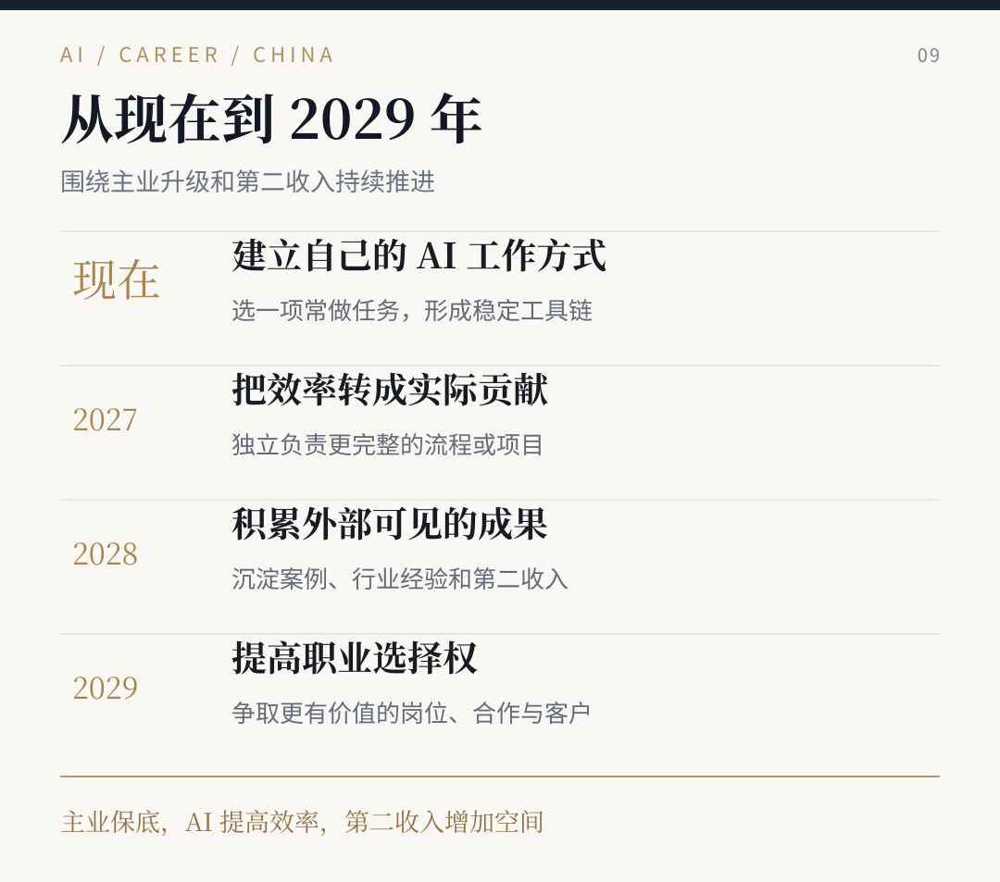

AI 时代，普通人怎样才能不被淘汰？
中国职场未来三年怎么变，我把自己的判断和具体做法都写在这里。
AI 时代到底怎么才能不被淘汰？这个问题我最近经常听到。有人已经工作十年，担心公司接入 AI 以后减少岗位。有人正在找工作，简历投了很多份，想知道现在学什么才有用。还有人每天看 AI 新闻、试各种工具，工作方式却基本没变。
我做了多年 B 端 AI 产品，平时也做职业咨询。这次把国务院、人社部门的政策、2026 年招聘数据、企业的真实使用情况，以及我接触过的求职问题放在一起看，研究了三十种常见岗位。
先把我的建议说清楚。主业尽量守住，在主业里把 AI 用起来，逐步争取更完整的工作职责。同时从自己原来的专业能力出发，建立一个小的第二收入来源。
这条路适合多数有家庭、有工作、需要稳定收入的人。你原来做运营，就先在运营岗位里用 AI 提高工作能力；做财务，就从财务数据和经营分析下手；做制造，就从设备、工艺和质量问题入手。有经验的人没必要为了一个热门词汇把过去十年的积累扔掉。
未来三年会有变化。我下面直接讲为什么变、哪些岗位会变、该怎么应对。研究数据和政策原文放在最后，方便查。

一、中国的就业市场已经开始变化
先看几组数字。
智联招聘 2026 年 7 月发布《2026 年人工智能产业人才发展报告》。根据它的平台数据，2026 年上半年 AI 行业招聘企业数同比增长 24.8%，职位数增长 10.6%，求职人数增长 10.5%。其中 AI 产品经理职位数增长 87.7%，智能体开发人才需求增长 244%。[1]
这组数字说明 AI 行业在扩大招聘，同时求职的人也多了。特别要注意，增长快的岗位不一定有很多空缺。一个岗位从一百个涨到两百个，增长百分之百；另一个岗位即便下降一些，仍可能有几万个机会。找工作还得结合城市、经验要求、实际招聘数量来看。
同一份报告还有个数据，我觉得更值得注意。AI 行业招聘岗位中，机械设计及制造工程师占 6.8%，软件研发占 6.2%，人工智能工程师占 6.1%。人事、销售、产品等职位也排在前面。[1]
这意味着 AI 公司需要的不光是算法工程师。业务要落地，就要有人做硬件、制造、销售、产品、交付和运营。懂业务的人有机会进入 AI 行业，原有行业也会需要更多会用 AI 的员工。
年轻人的就业压力也不能忽略。教育部发布的信息显示，2026 届普通高校毕业生预计 1270 万人。[2] 我在做求职咨询时能感受到，很多人关心的已经是能否拿到面试、有没有适合自己的岗位，以及下一份工作能不能积累经验。
国家的方向也很明确。国务院 2025 年发布《关于深入实施“人工智能+”行动的意见》，提出到 2027 年，AI 与六个重点领域广泛深度融合，新一代智能终端、智能体等应用普及率超过 70%；2030 年超过 90%。[3]
2026 年，人社部等部门又发布了“人工智能+人社”实施意见，提出在就业匹配、培训、社保等方面推进应用，到 2027 年探索约五十个高价值应用场景。[4]
还有一份值得知道的文件。国务院有关部门提出，2025—2027 年开展补贴性职业技能培训三千万人次以上，涉及先进制造、数字经济和生活服务等方向。[9] 对想转岗的人，这意味着可以留意当地人社部门公布的课程和报名条件。自己适合学什么，还是先看岗位的真实需求。
把这些放在一起看，我的判断是，企业接下来会先改变具体任务，慢慢改变岗位要求，再决定团队需要怎么配置。
它不会整齐划一地发生。互联网企业、制造业龙头可能已经在上系统。一些中小公司还在用 Excel、微信群和人工录入。这个差异恰好给普通人留下了时间。你不用今天就把所有模型学会，但应该开始改变自己的工作方法。
二、为什么很多工作会变
在 B 端做过产品就知道，企业采购一套系统，最后一定要算账。买回来以后能不能赚钱，能不能减少重复劳动，能不能接进原有业务系统，能不能稳定运行，出了错有没有人处理。
AI 也是这样。
假设一家电商公司每天要处理三千条客户消息。以前需要十几个客服轮班。现在可以让 AI 先回答配送查询、产品规格和常见售后问题，人工接退款争议、复杂投诉和高价值客户。客服这个岗位还会在，但原来每天重复回答的问题会减少，知识库维护、服务质量、疑难问题处理的比重会增加。
再看产品经理。过去一个新功能可能先写十几页 PRD，再画流程图、原型图。现在文档和原型初稿会便宜很多。公司往后更愿意问，这个需求是谁提的，客户愿不愿意买单，上线以后指标有没有变化。只会写材料的人会比较被动，懂客户和交付的人会有机会。
财务也类似。票据识别、凭证整理、基础对账会继续自动化。企业还得有人判断异常，解释利润为什么变了、哪些客户回款慢、哪些费用不合理。懂会计准则、业务和系统的人会承担更多事情。
这里有两项研究可以帮助理解。
美国一项涉及 5179 名客服的研究发现，引入生成式 AI 辅助后，客服平均每小时解决的问题数增加约 14%，新人获得的帮助尤其明显。[5] 工具把优秀客服的部分经验变成了实时建议。
另一项研究却得出了不同结果。METR 在 2025 年让 16 名资深开源开发者处理 246 个真实任务，发现当时使用 AI 工具的任务平均多花了约 19% 时间。[6] 2026 年研究团队又说，新一轮测试中工具使用习惯和样本选择发生变化，效果还需要继续测。[7]
我看完更确信一件事。AI 能不能提高效率，要看任务。 标准问题可能很快就能处理，复杂系统里一次错误修改反而会多出几个小时排查。企业最终会把工具留在真正有效的环节。
所以，未来岗位变化最明显的地方，通常有三个特征。工作重复多，输入材料相对固定，结果容易检查。会议摘要、资料分类、商品文案、基础报表、代码样板都在里面。客户谈判、现场工艺调整、复杂决策、质量签字等工作，短期更需要经验和责任。

三、2027、2028、2029 年，我怎么看
2027 年，AI 开始成为很多岗位的日常工具
我预计先发生的变化集中在客服、运营、市场、行政、软件研发、财务共享、销售支持。公司会要求员工把文档整理、常见问题回复、报表初稿、测试代码等事情做得更快。有的公司采购统一的工具，有的允许团队自己试。
这一年，同一岗位的人会出现明显差异。一个运营还在手工整理几百条评论，另一个已经能快速整理用户问题，随后自己决定选题和广告预算。一个产品经理用几天整理竞品材料，另一个把更多时间放在访谈客户和确认需求上。
2027 年最值得做的事，是让 AI 稳定参与主业。 不用追所有新功能。挑自己每周都做的事情，学会把材料整理好，交给工具处理一部分，最后自己审核结果。能节约时间，就去承担更多有价值的工作。
2028 年，招聘会更看重一个人负责多大范围
如果前一年的应用持续有效，岗位说明书会进一步改变。运营可能同时承担内容、投放和用户转化。财务从日常核算向业务分析延伸。产品经理需要看懂 AI 系统的成本、权限和上线效果。开发者要会使用 AI 编码，也能负责测试、部署和故障处理。
新人的入口可能更难。以前公司愿意安排新人做数据录入、材料整理、测试用例初稿，现在这些工作已经有一部分可以交给工具。新人就要更早接触真实问题，学会把一个小项目做完整。
2028 年重点争取职责。 你负责的环节越靠近客户、订单、成本和交付，经验越容易积累，也更容易在下一次跳槽时讲清楚自己的价值。
2029 年，部分公司的岗位会重新组合
到 2029 年，我预计会看到更多综合型岗位。运营懂数据和客户，产品经理懂业务与系统，财务懂经营，制造工程师懂设备与数据，销售懂产品交付。部分纯执行岗位可能减少，部分公司也会因为订单扩大继续招聘。
我更担心一种人。工作做了很多年，仍然只负责其中一个容易标准化的步骤，不清楚客户为什么付钱，也不知道自己的工作如何影响结果。一旦公司改变流程，这个人就很难向别的岗位移动。
2029 年，我更看重三个积累。 行业经验、AI 工作能力、稳定的客户关系。第三项也包括公司外的客户来源。有人靠专业咨询获得副业收入，有人靠内容接到项目，有人帮家里生意做推广。这些事情需要时间，适合从现在慢慢开始。
我把三年的判断画成一张图。不同城市和行业推进速度会有差别，但准备方向已经比较明确。

四、哪些岗位最值得担心，哪些能力会更值钱
我把三十种常见岗位拆了一遍，发现有一条规律。只提供初稿、整理和搬运的人更容易被压价，能完成整段业务的人更容易留下来。
这并不只影响办公室。制造、外贸、本地服务也会逐步改变。区别在于有些工作可以直接在电脑里完成，有些还要连设备、跑现场、和客户谈。
给大家一张岗位地图。后面再逐个讲具体应该怎么做。
| 工作方向 | 最先改变的任务 | 建议往哪里发展 |
|---|---|---|
| 行政与人事 | 纪要、表格、JD 初稿、资料整理 | 流程管理、招聘质量、组织协作 |
| 财务与法务 | 票据识别、对账、条款定位 | 经营分析、异常判断、专业审核 |
| 客服与销售 | 常见问题、线索整理、会议纪要 | 客户关系、复杂问题、成交和续约 |
| 内容与电商 | 标题、素材、字幕、基础报表 | 选品、投放、转化、利润和复购 |
| 产品与设计 | PRD、低保真原型、通用设计稿 | 需求验证、产品结果、用户体验 |
| 研发与测试 | 样板代码、接口初稿、用例生成 | 系统架构、测试质量、部署运维 |
| 制造与物流 | 质检初筛、报表、排程建议 | 现场工艺、设备数据、异常处理 |
| 教育与服务 | 备课材料、客服问答、预约整理 | 教学效果、客户体验、长期服务 |
其中最值得注意的，是从岗位名字转向看日常任务。同样叫运营，有人在批量发素材，有人管投放预算、利润和复购。前者更容易被工具影响，后者的业务经验会继续有用。
五、30 种岗位，直接告诉你 AI 怎么用
这一部分可以直接跳到自己的职业看。我尽量把步骤说到日常工作里。软件用公司已有的就行，WPS、Excel、钉钉、飞书、企业自建知识库，以及国内正常可用的 AI 模型，都可以用来做第一步。涉及公司客户、合同和员工数据，先用企业批准的环境，别随手传到个人账号。
办公、财务、人力和法务
01 行政文员。 会议纪要、通知初稿、报销材料分类、工作日报，可以先让 AI 帮忙整理。比如开完周会，把可使用的会议记录整理成决议、负责人、截止日期三列，自己核对以后发出。想往上走，就去负责会议后的执行跟进、OA 流程和跨部门协调。公司需要的是一件事最终有人推进，不缺一份写得漂亮的纪要。
02 招聘 HR。 用 AI 起草 JD、归纳岗位要求、设计结构化面试问题，给招聘经理准备候选人对照表。最有价值的能力还是理解用人部门，到底需要一个什么人，招聘渠道哪个有效，候选人为什么放弃 offer。简历筛选涉及个人权益，要把候选人真实经历、判断依据和人工决策留下来。下一步可以往招聘运营、人才发展或 HRBP 发展。
03 财务会计。 在 WPS 或 Excel 里先整理清楚报销、应收账款、成本科目，让工具辅助检查金额差异、重复报销、账龄变化和异常支出。每个月给业务负责人多解释一步，比如利润降了，是客单价变了、渠道费用涨了，还是坏账增加。会做账是基础，能看懂业务里的钱往哪儿走，才能逐步承担经营分析、业财一体化和财务数字化工作。
04 法务助理。 合同的付款期限、违约条款、保密义务、争议解决，可以让 AI 辅助提取，形成条款对照表。法律依据自己查原文，合同是否接受由法务负责人判断。法务的升级方向在法律检索、合同管理、业务风险和合规流程。将来企业需要的仍是知道哪条约定会给业务带来实际麻烦的人。
05 采购专员。 供应商报价整理、不同币种与税费口径统一、合同条款对照、到货时间比较，都可以用 AI 省时间。自己负责总成本、供应商资质、质量、付款条件和实际交期。下一步往供应链管理、成本分析、供应商开发走。能帮公司减少库存积压和异常采购，比单纯把询价表做得更快更有价值。
客服、销售与外贸
06 客服专员。 让 AI 从已确认的知识库里查退换货规则、物流说明和产品参数，再给出回复草稿。自己接复杂投诉、补偿争议、异常订单和情绪激动的用户。进一步可以接知识库维护、服务质检和客服运营。客服岗位不会只用解决了多少条咨询衡量，解决率、转人工比例、投诉率和复购同样重要。
07 销售开发。 找公开的企业资料、分析目标公司的业务、准备首次沟通的问题，让 AI 先帮你做功课。自己确认客户是不是真的有需求、谁负责预算、现在为什么要采购。不要把自动群发几千条消息当成销售能力。向上走需要会判断线索质量、管理 CRM 和持续推进成交。
08 大客户销售。 用 AI 整理客户会议纪要、产品功能对照、竞品资料和方案目录。真正的谈判、交付承诺、合同和回款仍要自己跟。你应该熟悉客户内部的决策过程，知道技术负责人、业务负责人和采购各关心什么。能带着团队完成从售前到回款的流程，会比只擅长做 PPT 更有竞争力。
09 外贸业务员。 我很看好懂行业的外贸人使用 AI。多语言邮件、产品规格说明、常见问题、夜间询盘整理，工具都能帮忙。上班后自己确认询盘真实性、产品认证、MOQ、交货期、付款方式和贸易条款。AI 可以减少语言和时差的障碍，能不能签单还看产品、供应链和信任。后面可以往大客户、海外渠道和跨境业务负责人走。
阿里国际站 2025 年披露过一个义乌机械商家的案例。沙特买家在凌晨询问无油螺杆空气压缩机，AI 接待助手先回答产品问题，随后由商家继续推进业务。平台称最终达成了大额订单。[8] 我觉得这种组合比较符合国内中小企业的实际情况。夜里先把客户接住，白天由懂产品的人跟进。公司没必要把完整销售决策交给机器。
内容、运营、电商与设计
10 电商运营。 商品标题、详情页初稿、评价整理、促销素材可以用 AI 生成。更重要的是看懂商品毛利、平台扣点、广告成本、库存和退货率。比如一个链接卖得多却利润低，你要找出是投放太贵、折扣过大，还是售后成本高。下一步去负责品类、增长或店铺经营，别把价值只放在上架和做图上。
11 直播运营。 AI 可以从历史直播记录里整理高频问题、提取高转化商品的特点、生成脚本初稿、归纳每场复盘。自己决定选品、价格、库存、主播节奏和售后承诺。最应该熟悉的数字是进房、停留、点击、下单、退款和最终毛利。会剪切片有用，能解释一场直播为什么赚钱会更有用。
12 视频剪辑。 自动字幕、粗剪、镜头分段、背景清理已经能节约很多制作时间。剪辑师往后需要更懂叙事、节奏、内容定位、平台规则和商业交付。你要知道一条视频前几秒为什么有人停留，哪段让用户离开，品牌信息是否传达到位。懂内容结果的剪辑师仍然有空间，反复机械裁切的收费会越来越难维持。
13 平面设计。 用 AI 出草图、排版参考、海报尺寸变体，能减少前期探索。但最终的品牌规范、字体授权、商业使用、产品信息和视觉一致性需要设计师把关。以后更适合往品牌设计、视觉体系、产品设计和业务创意走。客户付费是为了传播效果和统一的品牌形象，不是为了买十张差不多的 AI 图片。
14 新媒体编辑。 资料检索、访谈整理、标题建议、图文排版、视频转文字都适合工具辅助。选题、事实核查、内容角度和表达方式必须自己掌握。尤其现在网上 AI 文章很多，大家一眼就能看出那些重复的套话。懂自己的读者、愿意研究原始资料、能够持续说清楚一件事的编辑，价值会提高。做公开内容时按平台要求完成 AI 标识。
我自己做内容最直观的经验来自一条职业晋升相关的视频。那条内容给我带来过 1200 元的实际成交。这个结果提醒我，流量多少当然有用，更关键的是你讲的事情有没有人真正需要，看到内容以后会不会来咨询。做职业内容和做娱乐流量，后面的商业逻辑差别很大。
15 交互设计。 线框图、通用组件、初步页面流程可以让 AI 帮忙生成。下一步要把时间花在用户研究、复杂流程、无障碍和真实操作测试上。比如一个老人办理业务总找不到下一步按钮，你能解释原因并改好，价值比多画几版相似页面更高。适合继续向 UX 研究、复杂业务设计和设计系统发展。
产品、研发、测试与数据
16 普通产品经理。 把用户访谈、客服反馈和竞品材料整理给 AI，让它辅助生成需求文档、原型和问题清单。自己去确认需求是否真实、优先级怎么排、技术实现花多少成本、上线以后怎么衡量。别把写 PRD 当成工作成果的终点。我带过的求职咨询里，产品经理经常需要解决的就是这个问题，简历写了很多项目动作，却没交代为什么做和最后有什么变化。
17 AI 产品经理。 这一类岗位要求更具体。要懂大模型适合处理什么任务，知识库怎么更新，检索结果如何引用，工具调用权限怎么设计，如何评估准确率、成本和延迟。做客服智能体，就看它能否回答真实问题、什么时候转人工、错答怎么追溯；做文档助手，就看有多少问题能找到正确原文。能把 Demo 做出来只是入门，做成业务能长期使用的产品才算交付。
18 前端开发。 页面框架、样式、组件初稿和单元测试可以交给 AI 协助。你继续负责状态管理、性能、可访问性、浏览器兼容和安全问题。代码能生成不代表能直接上线。会把功能跑通、能定位线上错误、能与产品和后端协作的开发者，价值仍然很高。
19 后端开发。 AI 很适合生成接口样板、SQL 查询建议、文档和测试草稿。难点在权限、事务、数据库性能、幂等、并发、失败重试和线上可用性。你要能看懂生成代码可能在哪个边界出问题，尤其是支付、订单和账户类系统。经验丰富的后端可以把 AI 当成辅助开发者，把主要精力放在系统设计和稳定交付上。
20 软件测试。 测试用例初稿、日志归纳、简单自动化脚本可以让 AI 帮忙。测试人员应当更熟悉业务里的高风险路径，例如重复付款、网络中断、错误退款、越权访问、数据恢复和回归问题。往质量工程和测试开发走，掌握接口测试、自动化回归、质量指标以及 AI 应用本身的评估。
21 数据分析师。 SQL 初稿、数据字典整理、图表生成、文字摘要可以用 AI。真正值得投入的仍然是指标口径、数据质量、统计基础和业务解释。比如订单增长了百分之二十，可能是活动带来的，也可能是渠道口径变了。你能找到原因，告诉负责人下一步该怎么改，就比做出一份漂亮的图表更重要。
22 智能体工程师。 需要掌握模型接口、工作流编排、工具调用、权限、状态、日志、失败恢复和测试。真正的业务往往涉及 CRM、工单系统、数据库或企业知识库，这些系统不能随便访问。企业愿意为能稳定运行、容易追责、能维护的方案付钱。只会做聊天界面，长期竞争力有限。
23 数据标注和 AI 训练。 简单标签、重复清洗、标准格式转换会受到自动化影响。更值得发展的是难例处理、标签规范、抽检方法、模型错误分析、多模态质量管理。比如客服意图识别经常把退款和物流纠纷混在一起，你要能发现分类标准的问题，补充边界样本，帮助整个系统提高质量。

制造、教育、医疗与实体服务
24 教师与培训。 教案初稿、题目变体、课堂材料、学生常见错误整理可以让 AI 协助。老师应该投入更多时间在课程设计、课堂反馈和学生真正不会的知识点上。职业培训尤其要贴近真实岗位，讲一个会用的工作方法，比讲半天模型原理更能帮助学员。你自己熟悉的课程内容，也有机会延伸成专业辅导和知识产品。
25 医护文书与医院运营。 AI 可以在获批准的系统里辅助整理病历草稿、排班、流程问答和行政资料。临床决策、患者沟通、病历签署和隐私管理仍按专业制度执行。医院里的运营、信息化、质控岗位，更需要懂业务流程、规范和系统的人。学会用工具整理信息是一部分，医疗专业责任仍然要靠专业人员承担。
26 工业质检员。 机器视觉已经可以辅助发现外观缺陷，AI 也能帮助归纳质检记录和异常模式。人的主要工作会更偏向复核难例、定位缺陷原因和推动工艺调整。看到一批产品有划痕，你还要判断是设备磨损、原料、参数还是操作流程出了问题。向质量工程、设备维护和工艺改进方向走很实际。
27 生产计划。 排产表、库存预警、订单变化汇总可以让 AI 提供建议。负责人必须掌握设备产能、人员班次、物料到货和紧急插单的真实约束。下一步往 MES、ERP 协同和供应链计划走。能让交付日期更准、库存更低、生产少停机，才是这一岗位的价值。
28 仓储物流。 工单分类、路线建议、库存异常和运输日报可以自动整理。人工仍要处理实际收货、破损、延误、丢件和现场协同。懂 WMS、运输数据、库存周转与成本的人，能从操作岗位进入仓储管理、物流运营和供应链改善。
29 建筑设计与造价。 规范检索、工程量预处理、清单对照、方案图初稿可以用 AI 辅助。施工现场、材料价格、图纸会审、合同变更和工程责任仍需专业判断。可以往 BIM 协同、项目管理、造价控制和数字化工程走。工具帮你快一点查资料，你需要解释为什么这样设计和这样计价。
30 社区养老和本地服务。 排班、预约、常见问题、服务记录、活动宣传适合用 AI 处理。真正决定复购的是有没有准时到达、服务是否稳定、老人和家属是否信任。熟悉客户需求的服务人员可以向运营、管理、客户关系发展。家里有门店、小作坊或农产品生意，也可以直接把这些工具用在自己的经营上。
三十个岗位讲完，我最建议普通人先抓住自己所在的行业。行业经验还在，你就有一个可以借力的地方。 产品经理先研究产品怎么交付，销售先研究怎么成交，制造工程师先研究怎么解决现场问题。AI 是工具，具体工作仍然要有人做完。
六、普通人需要补的 AI 能力，我认为有四项
前面讲了这么多岗位，学习方向其实可以收敛到四项。用不着每个人都去训练大模型，也不需要每个月订阅十几种工具。
第一项，能把问题讲清楚。 你要提供什么资料、完成什么任务、遵守什么业务规则、最后输出给谁，都要说得明白。比如要求 AI 整理销售记录，只说“分析一下”很容易得到一堆空话。告诉它数据字段、订单口径、关注的异常和汇报对象，结果会更有用。
第二项，能处理文件、表格和资料。 很多人在公司里花时间最多的工作，仍然是 Excel、WPS、PPT、PDF、会议记录、合同和客户消息。这些东西先学会整理，能在常用软件里调用 AI 完成初稿，收益已经很直接。再去研究数据清洗、知识库和自动化。
第三项，能发现 AI 的错误。 做财务就核金额和税费，做法务核法律原文，做运营核产品参数，做开发跑测试，做医疗遵循专业审核。你比模型更清楚什么地方错一次就会出事，这恰好是经验的价值。
第四项，能把几个工作环节连起来。 比如客服问答整理完自动形成工单，工单分给对应负责人，处理结果写回系统，客户再收到消息。再比如销售会议结束以后，客户需求进入 CRM，负责人明确下一步跟进时间。这时你开始做的是工作流程，已经比单纯会聊天多走了一层。
国内有哪些工具可以开始用？一般办公可以从 WPS、Excel、钉钉、飞书里的现有能力，以及企业允许使用的豆包、通义、Kimi、腾讯元宝、DeepSeek 等工具里选择。写代码就接自己已有的 IDE、测试框架和代码仓库。企业应用优先考虑系统是否可接入、数据放在哪里、权限如何管理。
工具会继续变，别给某个产品押太多时间。先练自己岗位里能长期复用的能力。

七、我为什么建议每个人保留主业，同时准备副业
我现在做内容、职业咨询和 AI 相关服务，最明显的感受是，一个人的专业经验可以有不止一种收入方式。原来在公司里做产品，经验只通过工资变现。后来我用这些经验讲职业成长、分析 AI 产品、辅导求职，开始有公司以外的客户。
有一条职业晋升内容带来过 1200 元的成交。这事让我更明确，做内容的商业价值要看能解决谁的问题。我也遇到过在海外工作的从业者通过内容联系我，咨询求职和 AI 转型。一个人的行业经验，经过长期分享，有机会被公司以外的人看见。
所以我建议有工作的人，优先把工资收入维持住，再慢慢建立自己的客户来源。副业一开始不需要做很大，每个月有几位真实咨询者、几个小订单，就能知道市场到底需要什么。
适合普通人的四种副业
专业服务。 你原来做什么，就围绕那项能力提供服务。做产品经理可以提供职业辅导、需求梳理和产品原型；做开发可以帮小团队开发网站、内部工具；做设计可以提供品牌视觉和电商物料；做数据分析可以帮助商家整理经营报表；做外贸可以提供产品资料与跨语种业务支持。原有经验越扎实，服务越容易交付。
内容带来客户。 不必每个人都做娱乐账号。做财务的人可以讲小企业常见的经营问题；做产品的人可以讲真实的产品取舍；做招聘的人可以讲简历和面试里容易出错的地方；做制造的人可以讲设备、工艺和质检。内容选题要靠近你能解决的问题。有人看完愿意来找你，才有机会产生后续服务。
把重复服务做成产品。 如果你每周都有人问同样的问题，就整理成资料、课程、模板或小工具。先通过一对一服务知道用户真正卡在哪里，再决定哪些部分适合标准化。职业辅导可以沉淀成课程，设计服务可以做成产品包，软件开发可以把反复使用的功能做成工具。
帮家里原来的生意做增长。 这条路尤其适合已经有门店、商品、农产品或本地服务的家庭。AI 可以协助整理商品介绍、客户常见问题、短视频脚本、活动海报和客服信息。有人做餐饮，就把菜单、团购、外卖评价、老客户服务接起来；有人做制造加工，就把产品手册、多语资料和询价流程先做好。起点是一门已经存在的生意，很多事情更容易判断。
我给不同主业整理了一个对应关系，想做第二收入可以直接参考。
| 现有职业 | 值得先考虑的第二收入 |
|---|---|
| 产品经理 | 简历面试辅导、产品咨询、业务原型 |
| 程序员 | 企业小工具、自动化、网站维护 |
| 设计师 | 品牌物料、电商设计、演示文稿 |
| 运营人员 | 账号诊断、内容服务、用户增长 |
| 财务人员 | 经营报表、预算管理、数字化协助 |
| 招聘与 HR | 简历修改、模拟面试、招聘流程咨询 |
| 外贸从业者 | 产品资料、多语内容、跨境业务支持 |
| 教师 | 专业辅导、课程资料、具体知识点服务 |
| 工程师 | 设备知识培训、工艺流程梳理 |
| 本地商家 | 门店内容、客户服务、线上获客 |
这里面有些工作涉及专业资质和公司保密义务，比如财务代理、法律服务和使用企业客户信息，还是按行业要求办。副业最好从自己的公开知识、原创资料和可以独立交付的服务开始。

副业最容易踩的两个坑
第一个是还没有客户就先投入很多钱。注册公司、买软件、买设备、报课程、招团队，开支一下就上来了。我更愿意先找出一项具体服务，看看有没有人愿意付钱，再根据订单决定投入。
第二个是主业还没站稳就急着辞职。没有稳定订单的时候，副业很容易让人焦虑。你要做内容、服务或者开发工具，都需要积累。工资承担生活开支，副业承担试错，通常更合适。
对于失业、家里开支压力大的人，这个顺序还得更谨慎。先解决收入，找到下一份可持续的工作，再慢慢发展副业。
八、我做求职咨询时，最想提醒的三个问题
我经常遇到求职者只把注意力放在 AI 热点上。有人想从普通产品经理转 AI 产品，有人担心自己做过的运营工作以后不值钱，还有同学准备面试 AI 治理岗位，却不知道 JD 背后真正需要的业务能力是什么。
之前我辅导过准备抖音直播 AI 治理方向面试的同学。这个岗位听起来很前沿，拆开以后还是实际业务。直播有什么违规或风险内容，系统怎么识别，模型漏掉了什么，误判后谁处理，业务规则怎样更新，审核效率与用户体验怎么平衡。懂模型很重要，懂平台业务和治理流程同样重要。
这就是我一直强调行业经验的原因。模型和工具可以继续学，岗位里的业务规则、真实客户和工作判断，需要通过实际工作积累。
还有求职者会说自己很会用 AI，简历里列了十几款工具。我通常更想知道，他把工具用在什么工作里，替他解决过哪件具体麻烦，最后结果有没有变化。一次完整的产品交付、一次运营转化改善、一次质量问题修复，能讲清楚这些事情，简历就会扎实很多。
对于大家最关心的三种处境，我的建议也不一样。
已经失业，先把收入接回来
优先投递与原有行业、原岗位有经验重合的工作。AI 可以帮你按 JD 调整简历表达、整理面试常见追问、分析目标公司的公开业务资料。把过去做过的实际项目讲清楚，别为了追热点把自己包装成没有做过的 AI 专家。
我建议先把求职节奏稳住。明确一批目标公司、持续投递、跟进招聘进度、复盘面试。短期收入压力比较大的话，也可以考虑同领域稍微下探一个职位，先恢复稳定现金流。政府公共就业服务、失业保险和培训政策可去当地人社渠道查询，相关资格按当地实际办理。
正在跳槽，往原专业和 AI 的交叉处找
普通产品经理可以关注 AI 应用产品、企业服务产品、行业智能化产品。做运营的可以关注增长运营、AI 运营、数据分析相关岗位。做财务的可以看财务共享、业务财务和数字化项目。做制造的可以看智能制造、质量数据、工厂信息化相关岗位。
关键在于能复用多少原来的经验。一个做过汽车产品的人转汽车 AI 应用，比完全不了解行业的人更容易理解业务。你掌握的行业知识和项目经验，应该是简历里最突出的部分。
薪资也要看得细。相同的月薪，十二薪和十六薪不一样；底薪、奖金、社保公积金、城市成本和岗位稳定性也会影响最后拿到手的钱。别只因为岗位名称多了“AI”就降薪转行。
刚毕业，先接触真实的工作
应届生要尽快进入业务场景。想做产品，可以尝试实习、企业合作项目或有真实用户的小产品；想做运营，可以为一个真实活动负责宣传与报名；想做开发，把一个功能从需求做到部署；想做 AI 产品，至少接触数据、业务规则、评估和用户反馈。
学历和基础技能依然重要。AI 会降低一些基础工作的进入门槛，同时也会让用人单位更看重你能否解决实际问题。第一段能被验证的经历，比简历上一串工具名称更有说服力。

九、做管理者的人，我还有一条单独建议
如果你已经是团队负责人、部门经理或者高管，单纯学会使用几个 AI 工具还不够。你最需要改变的是团队的工作分工。
拿销售团队举例。过去销售每天找客户资料、写纪要、更新 CRM、汇总周报。现在可以让 AI 在企业系统里辅助完成信息整理，销售把更多时间用来筛选重点客户、了解预算、谈条件和推进回款。主管要看的是有效线索、成交周期和客户留存，不能只看自动生成了多少份报告。
做运营管理也一样。先把素材生产、用户反馈汇总和活动日报处理得更快，再重新分配选题、投放、数据分析和客户运营。研发管理则可以先从代码审查、测试辅助、文档检索和故障复盘下手，明确哪些结果必须人工确认。
我做高管 AI 成长陪跑时，最关注管理者能否把 AI 用进实际工作。一个负责人自己写 PPT 更快，带来的改善有限。能推动团队更快处理客户、减少重复劳动、提高交付质量，价值就大得多。
管理者应该掌握业务流程、数据、系统权限、团队职责和成本。你不用成为算法工程师，但需要知道项目做到什么程度才算能用，谁来维护，出了问题找谁。

十、未来三年，普通人具体怎么安排
我建议按三个阶段推进。先把工作方式改掉，再争取更完整的职责，最后增加公司以外的收入来源。
接下来一个月。 把自己工作里最经常遇到的两三类事情交给 AI 辅助。例如整理会议、处理文档、生成商品资料、分析客服问题、编写测试初稿。你自己熟悉内容，能很快看出结果是否准确。一个月以后，至少有一项日常工作已经用得比较顺手。
接下来三个月。 在公司里多争取一段工作。从只负责内容生产，走向参与选题和数据；从只负责报表，走向解释异常；从只负责代码，走向联调和上线；从只负责客户录入，走向筛选重点客户。把这些实际变化留在工作成果里，以后内部晋升或跳槽都用得上。
接下来一年。 继续积累本职能力，找到一个你能够独立提供的服务。可以从内容、咨询、设计、开发或小生意开始，先有真实客户，再逐步把交付做顺。工作稳定的人利用晚上和周末做一点就行，没必要用熬夜换进度。
2027 年。 重点是把 AI 当成工作习惯，让自己在原行业更能干。
2028 年。 重点是争取更大职责。尽量负责客户、业务数据、交付或团队里的一段完整流程。
2029 年。 重点是把行业经验、AI 使用能力和自己的客户来源逐步结合。你可以继续在公司发展，也可以在已经有订单和经验的基础上增加副业投入。

十一、我最后想说几句
很多人担心 AI 是因为看到它突然能做以前需要几个人才能完成的事情。这种变化确实在发生。我自己做 AI 产品、做职业咨询，也能感受到企业和个人对 AI 的期待已经变了。
但把时间都用来担心，解决不了问题。你还得看自己懂哪个行业，能解决什么事情，什么工作交给工具最划算，自己能不能承担更完整的结果。
我给普通人的建议始终很简单。守住主业，用好 AI，争取更有价值的工作，再利用自己的经验慢慢建立第二收入。
做运营就研究怎么带来客户，做产品就研究产品怎么交付，做开发就把系统做稳，做财务就能解释经营中的钱，做制造就解决现场问题。把一项专业能力做到更深，比每隔几周换一个 AI 方向更可靠。
未来三年会有人转行，有人换公司，有人靠原有经验找到新的岗位，也会有人把副业慢慢做成生意。我希望你手里至少有一条正在变强的主业，以及一条有机会长出来的第二收入。
我把更多资料放到 GitHub 了
前面提到的三十种岗位，我做了更细的分类。公开政策、原始研究、各职业的操作方法，也整理进了开源项目《AI 时代不被淘汰保姆级指南》。需要查具体岗位的人，可以直接打开。
https://github.com/AIPMAndy/ai-era-survival-guide
资料来源
这些来源用于核对文章里的政策、招聘统计和研究结果。2027—2029 年的岗位判断，是我结合现有信息提出的个人分析。
[1] 智联招聘《2026 年人工智能产业人才发展报告》，2026 年 7 月。见经济日报相关报道和人民政协网具体岗位数据。
[2] 教育部转载新华社《扩大岗位供给 提升服务效能》，2026 年 6 月。原文。
[3] 国务院《关于深入实施“人工智能+”行动的意见》，国发〔2025〕11 号。原文。
[4] 人社部等四部门《关于加快推进“人工智能+人社”应用发展的实施意见》，人社部发〔2026〕40 号。原文。
[5] NBER，《Generative AI at Work》，2023 年工作论文，2025 年发表于 *Quarterly Journal of Economics*。原文。
[6] METR，《Measuring the Impact of Early-2025 AI on Experienced Open-Source Developer Productivity》，2025 年。原文。
[7] METR，《We are Changing our Developer Productivity Experiment Design》，2026 年 2 月。原文。
[8] 阿里国际站商家 AI 询盘案例，2025 年。平台案例。
[9] 国务院就业促进和劳动保护工作领导小组《关于开展大规模职业技能提升培训行动的指导意见》，国就劳发〔2025〕4 号。原文。